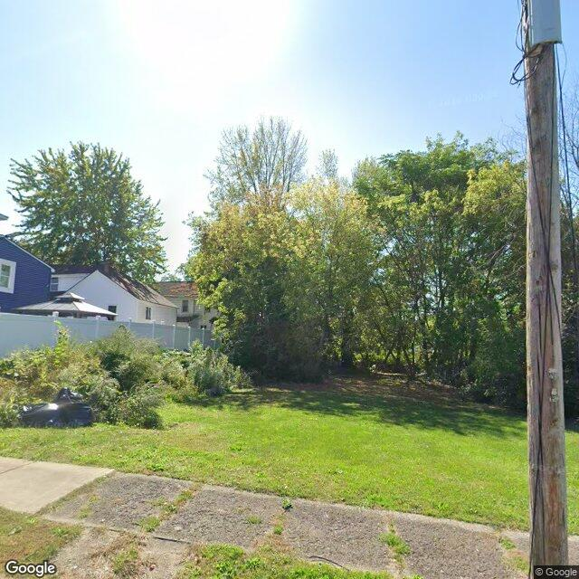

Property entry
603 Second North St
Published 2026-07-11T19:03:08+00:00
Parcel key: 003-13-150

covered pile · mediumAI image read
The image shows a vacant grassy lot with mature trees and some overgrown vegetation along the left boundary line, with no primary structure visible.
Property type guess: vacant_lot
Visible conditions
- The parcel appears to be an open grassy lot with trees and brush.
- A black tarp or covered object is visible in the weeds on the left side of the lot.
- No residential or commercial building is visible on the immediate parcel, though neighboring structures are partially visible in the background behind a fence.
Condition scores
- Porch Or Entry
- not_visible
- Roof
- not_visible
- Siding Or Facade
- not_visible
- Trash Debris
- minor
- Vegetation Overgrowth
- minor
- Windows Doors
- not_visible
- Yard Or Lot
- fair
Visible flags
- Active Construction Visible
- no
- Boarded Windows Or Doors
- no
- Fire Damage Visible
- no
- Structural Damage Visible
- no
- Vacancy Signs Visible
- no
Possible image-only flags
- There is a discrepancy between the visible vacant lot and the public record of 4 rental registry entries, suggesting the structure may have been demolished or the image shows an incorrect parcel.
AI review boxes
- covered pile: A black tarp or covered object is situated in the overgrown vegetation on the left side of the lot.
Review reasons
- AI requested human review
- Possible image-only issue
Image quality
- Available
- True
- Bytes
- 103060
- Needs Rerun
- False
['The image shows a vacant lot, which conflicts with the public record indicating 4 rental registry entries. It is unclear if the building was demolished, if the camera is facing the wrong parcel, or if the structure is set back and fully obscured by vegetation.']
ACS tract context
Census Tract 2; Onondaga County; New York
- Housing units
- 1686
- Median gross rent
- 146700
- Median household income
- 51848
- Poverty rate
- 28.1
- Renter-occupied share
- 50.1
- Total population
- 3511
- Vacancy rate
- 14.7
OpenStreetMap nearby
60 meter search radius
Summary
- 20 mapped building footprints
Vacant properties 0
No matching records found in this feed.
Rental registry 4
- Latitude
- 43.07511622
- Longitude
- -76.1602678
- NeedsRR
- Yes
- ObjectId
- 873
- PropertyAddress
- 609 Second North St
- RR_app_received
- 1742256000000
- Latitude
- 43.07507276
- Longitude
- -76.16015942
- NeedsRR
- Yes
- ObjectId
- 876
- PropertyAddress
- 605-07 Second North St
- RRisValid
- No
- Latitude
- 43.07504094
- Longitude
- -76.15969038
- NeedsRR
- Yes
- ObjectId
- 879
- PropertyAddress
- 737 Lemoyne Ave & Second Nort
- RR_app_received
- 1777334400000
- Latitude
- 43.07496072
- Longitude
- -76.15975027
- NeedsRR
- Yes
- ObjectId
- 882
- PropertyAddress
- 735 Lemoyne Ave
- RR_app_received
- 1777334400000
Code violations 0
No matching records found in this feed.
Unfit properties 0
No matching records found in this feed.